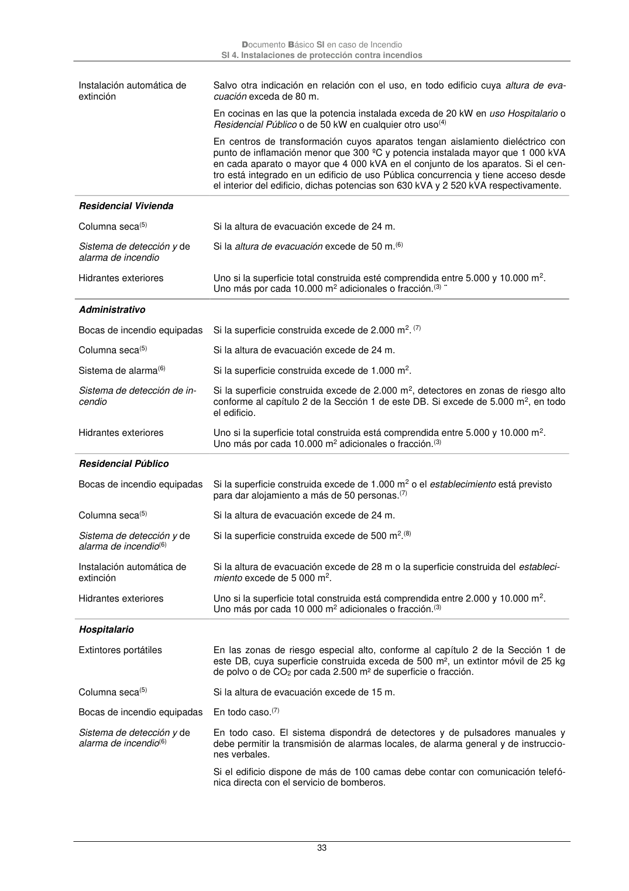

DB-SI Seguridad en caso de incendio · edición 2025-03-04 · capa oficial
Documento DB-SI-oficial · SHA-256 del PDF 0a2e78cd62471d9cc5cfe2efbc6aa39fdbad73c124aea7b039f9de96c141e105
Página física 33 de 92.
Copia fiel del PDF fuente · Fuente oficial
Ficha de la disposición en la fuente oficial
Formato: Texto de la página (Markdown)
Documento Básico SI en caso de Incendio SI 4. Instalaciones de protección contra incendios 33 Instalación automática de extinción Salvo otra indicación en relación con el uso, en todo edificio cuya altura de eva- cuación exceda de 80 m. En cocinas en las que la potencia instalada exceda de 20 kW en uso Hospitalario o Residencial Público o de 50 kW en cualquier otro uso(4) En centros de transformación cuyos aparatos tengan aislamiento dieléctrico con punto de inflamación menor que 300 ºC y potencia instalada mayor que 1 000 kVA en cada aparato o mayor que 4 000 kVA en el conjunto de los aparatos. Si el cen- tro está integrado en un edificio de uso Pública concurrencia y tiene acceso desde el interior del edificio, dichas potencias son 630 kVA y 2 520 kVA respectivamente. Residencial Vivienda Columna seca(5) Si la altura de evacuación excede de 24 m. Sistema de detección y de alarma de incendio Si la altura de evacuación excede de 50 m.(6) Hidrantes exteriores Uno si la superficie total construida esté comprendida entre 5.000 y 10.000 m2. Uno más por cada 10.000 m2 adicionales o fracción.(3) ¨ Administrativo Bocas de incendio equipadas Si la superficie construida excede de 2.000 m2. (7) Columna seca(5) Si la altura de evacuación excede de 24 m. Sistema de alarma(6) Si la superficie construida excede de 1.000 m2. Sistema de detección de in- cendio Si la superficie construida excede de 2.000 m2, detectores en zonas de riesgo alto conforme al capítulo 2 de la Sección 1 de este DB. Si excede de 5.000 m2, en todo el edificio. Hidrantes exteriores Uno si la superficie total construida está comprendida entre 5.000 y 10.000 m2. Uno más por cada 10.000 m2 adicionales o fracción.(3) Residencial Público Bocas de incendio equipadas Si la superficie construida excede de 1.000 m2 o el establecimiento está previsto para dar alojamiento a más de 50 personas.(7) Columna seca(5) Si la altura de evacuación excede de 24 m. Sistema de detección y de alarma de incendio(6) Si la superficie construida excede de 500 m2.(8) Instalación automática de extinción Si la altura de evacuación excede de 28 m o la superficie construida del estableci- miento excede de 5 000 m2. Hidrantes exteriores Uno si la superficie total construida está comprendida entre 2.000 y 10.000 m2. Uno más por cada 10 000 m2 adicionales o fracción.(3) Hospitalario Extintores portátiles En las zonas de riesgo especial alto, conforme al capítulo 2 de la Sección 1 de este DB, cuya superficie construida exceda de 500 m², un extintor móvil de 25 kg de polvo o de CO2 por cada 2.500 m² de superficie o fracción. Columna seca(5) Si la altura de evacuación excede de 15 m. Bocas de incendio equipadas En todo caso.(7) Sistema de detección y de alarma de incendio(6) En todo caso. El sistema dispondrá de detectores y de pulsadores manuales y debe permitir la transmisión de alarmas locales, de alarma general y de instruccio- nes verbales. Si el edificio dispone de más de 100 camas debe contar con comunicación telefó- nica directa con el servicio de bomberos.
